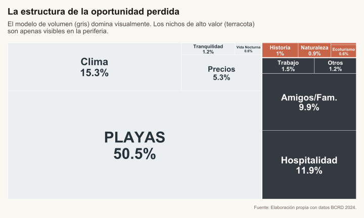
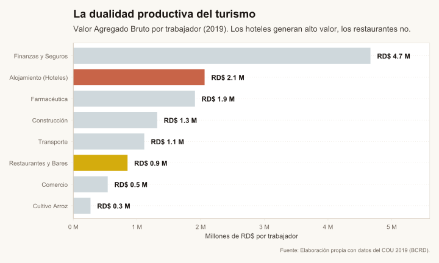

El modelo turístico dominicano: ¿Agotamiento o especialización extrema?
Turismo
Desarrollo
La República habla de
Los datos revelan una concentración extrema en el modelo ‘Sol y Playa’. Analizamos por qué la productividad laboral está estancada frente a otros sectores y dónde están las oportunidades reales de expansión más allá del volumen.
Escuchar artículo
Lo esencial en 3 puntos
Concentración extrema: El 77% de los turistas viene exclusivamente por playa, clima y resorts, revelando una demanda monolítica más que un modelo agotado.
Margen inexplorado: Historia, naturaleza y ecoturismo suman menos del 3% pese a existir recursos en todas las provincias. El problema no es de oferta sino de narrativa comercial.
Dualidad estructural: Los datos desmienten la baja productividad generalizada, mostrando que los hoteles generan un alto valor agregado (RD$ 2.06M por trabajador). El verdadero cuello de botella está en los servicios y restaurantes (RD$ 0.85M), que al absorber el grueso de la mano de obra sin agregar diferenciación, anclan los salarios promedio a la baja.
“El modelo turístico es de muy bajos salarios y además presenta signos de agotamiento”. Estoy seguro de que más de uno ha escuchado un comentario similar a este, y a simple vista podría tener sentido: sector intensivo en mano de obra poco cualificada, mucha informalidad y teóricamente difícil de integrar con otros sectores.
Pero, ¿qué tan cierto es esto? ¿Acaso el único camino dominicano es abandonar el modelo de desarrollo con más de 30 años de antigüedad y dar un giro de 180 grados?
Antes de saltar a conclusiones fatalistas, exploremos qué dicen los datos.
El turismo de playa: ¿Agotamiento o especialización extrema?
Por más robustos que parezcan, todos los modelos económicos eventualmente enfrentan la ley de rendimientos decrecientes. No es un secreto que el turismo dominicano recibe críticas recurrentes sobre su sostenibilidad a largo plazo, pero antes de diagnosticar un “agotamiento” irreversible del modelo, conviene examinar qué tan profundamente se ha desarrollado.
No basta con analizar la oferta desde un mapa, los datos de la Encuesta de Opinión, Actitud y Motivación a Extranjeros No Residentes revelan que el problema podría no ser de oferta, sino de una concentración extrema de la demanda.
“El problema podría no ser de oferta, sino de una concentración extrema de la demanda”
Cuando observamos los datos no nos encontramos con nada inesperado: el tema de las playas domina el 50% de las razones para visitar el país. Si a eso sumamos clima —muy relacionado— y una parte de hospitalidad, principalmente en las zonas de resort, estamos hablando de un 77% en el mismo renglón. Cabe la duda: ¿la República Dominicana solo cuenta con playas? La respuesta es no, y ahí tenemos mucho margen.
LA ECUACIÓN DE LA CONCENTRACIÓN
50.5% Playa + 15.3% Clima + 11.9% Hospitalidad (resorts) = 77.7% del total de motivaciones. Tres renglones vinculados que dejan apenas un 23% para todo lo demás.
Los infrautilizados
Al observar la encuesta encontramos algunos apartados donde sin lugar a dudas nuestro país tiene mucho que ofrecer: historia, naturaleza y ecoturismo, los cuales suman menos de un 3% en las razones de turismo. Este dato es de suma importancia para el país. No todas las provincias cuentan con playas, pero sí todas cuentan o con un lugar histórico, un área de hermosos paisajes o un lugar con fauna única.
3% Suman Historia, Naturaleza y Ecoturismo juntos

Teniendo eso en cuenta, es difícil hablar de un modelo agotado cuando, al menos en la mente de nuestra demanda, somos “el país de las playas”. Obviamente ese siempre será el principal objetivo —los países de donde viene el mayor flujo de turistas son países que escapan al nuestro durante sus momentos de invierno— pero eso no quita que aún tenemos mucho margen de integración.
Jarabacoa tiene ecoturismo, Santo Domingo tiene historia colonial, pero en la mente del turista promedio no existen, o no se le ha vendido de esa forma.
La dualidad estructural: ¿Dónde se queda el valor?
El tema salarial es multifactorial, pero al analizar la productividad laboral mediante el Cuadro de Oferta y Utilización (2019) —esa radiografía contable que detalla cómo se mueve el dinero en la economía—, nos encontramos con un hallazgo que contradice la intuición popular y refuerza la necesidad de diversificación.
Contrario a lo que se piensa, el subsector Alojamiento (Hoteles) es altamente productivo, generando RD$ 2.06 millones de valor agregado por trabajador al año. Esta cifra supera incluso a industrias sofisticadas como la Farmacéutica. Sin embargo, al ser un negocio intensivo en capital (infraestructura), esa riqueza no se traduce automáticamente en salarios masivos.
El verdadero reto está en la otra cara de la moneda: el subsector de Restaurantes y Bares. Este componente, que absorbe una mayor cantidad de mano de obra, muestra una productividad de apenas RD$ 0.85 millones, atrapado en una oferta de servicios estandarizados de bajo costo.

Aquí es donde la diversificación sectorial deja de ser un eslogan y se convierte en una necesidad económica.
El modelo de “volumen” actual llena habitaciones (alta productividad del capital) pero genera empleos de servicio básicos. Integrar historia, naturaleza y cultura permite crear productos turísticos donde el valor lo aporta el conocimiento humano (el guía especializado, el artesano, el gestor cultural), elevando la productividad de ese gran segmento laboral que hoy se queda rezagado.
No se trata solo de tener más hoteles, sino de que lo que sucede fuera del hotel valga más dinero.
Los obstaculos
Si la oportunidad es tan evidente, ¿por qué no se ha activado ya? La respuesta no está en falta de voluntad política ni en desconocimiento, sino en la estructura de incentivos del modelo actual y en barreras sistémicas que no se resuelven con campañas de marketing.
La trampa del all-inclusive
Los resorts todo incluido operan bajo una lógica de retención: mientras más tiempo el turista permanezca dentro del complejo, más consumen y menos gastan afuera. Un turista que sale a Santo Domingo por el día es un turista que no almuerza en el buffet ni toma tragos en el bar.
Para los hoteles, promover turismo “fuera del perímetro” es una opción de riesgo.
Infraestructura vial y conectividad deficiente
Ir de Punta Cana a Santo Domingo son ~2.5 horas en autopista decente. Pero ir de Puerto Plata a Jarabacoa son ~3 horas por carreteras secundarias. De La Romana al Parque Nacional del Este, otros 90 minutos en condiciones variables.
El problema: El turista promedio tiene 5-7 días. Perder medio día en transporte para ver una cascada o un museo no compite bien contra “otra piña colada en la piscina”. Sin rutas cortas y bien señalizadas, la fricción es demasiado alta.
Fragmentación de la oferta provincial
Santo Domingo tiene historia colonial. Jarabacoa tiene ecoturismo. Constanza tiene agricultura de altura. Pero no existe una narrativa integrada que los conecte en la mente del turista.
Costa Rica resolvió esto con el concepto de “Pura Vida” como paraguas. México tiene “Mundo Maya”.
Cada actor optimiza individualmente (hoteles, transporte, provincias), pero el resultado agregado es un equilibrio de bajo valor.
• • •
Conclusión: El margen inexplorado
El diagnóstico no es de agotamiento sino de subutilización. El modelo funciona, pero opera muy por debajo de su potencial de diferenciación territorial y productividad laboral.
La buena noticia: los activos están ahí. Historia, naturaleza, ecoturismo no requieren inventarse, requieren integrarse a la narrativa comercial del país.
La pregunta no es si debemos abandonar el “sol y playa”, sino cuánto tiempo más seguiremos dejando dinero sobre la mesa al no activar el 23% restante del portafolio turístico dominicano.
Fuentes de Datos & Referencias Académicas
Banco Central R.D. (2024)
"Encuesta de Opinión, Actitud y Motivación". Microdatos utilizados para generar el Mapa de Calor y el Treemap de preferencias (Playa vs. Resto).
Ver informe oficial (PDF) ↗Banco Central R.D. (2019)
"Cuadro de Oferta y Utilización (COU)". Matriz insumo-producto base para el cálculo del Valor Agregado Bruto por trabajador y el análisis de la dualidad hotelera.
Consultar Cuentas Nacionales ↗Orgaz Agüera, F. (2014)
"El ecoturismo en la República Dominicana". Estudio académico que analiza las potencialidades de los recursos naturales del país para diversificar la oferta masiva.
Leer Paper (Redalyc) ↗Fondo Monetario Internacional (2025)
"República Dominicana: Consulta del Artículo IV". Informe técnico exhaustivo que valida la resiliencia del modelo turístico dominicano y analiza su efecto multiplicador (spillovers) en el resto de la economía.
Leer Informe del Personal Técnico ↗